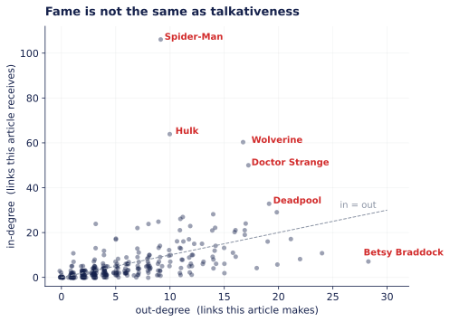
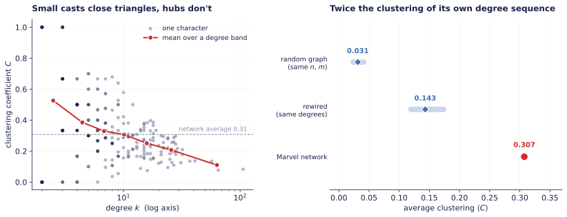
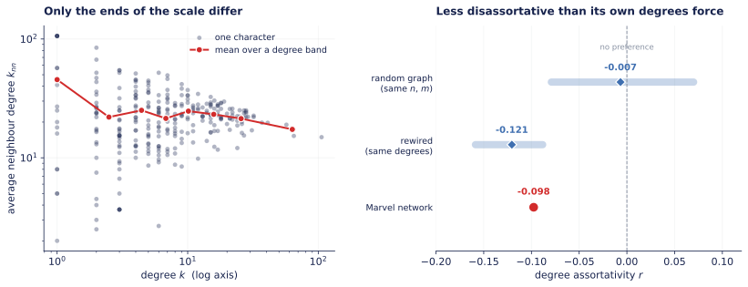
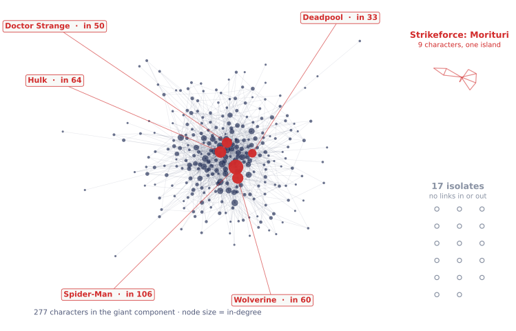
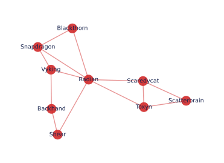

Our first pass at the Marvel link network: 303 characters, 1,784 arrows, and one small island of nine heroes nobody in the main universe has ever mentioned.
What this page is
The course handed us a frozen network and a set of week-1 tools. This post is what we got when we pointed the second at the first.
We start by describing the network and being explicit about what somebody decided a node and an edge would be, because that decision is doing more work than anything we compute afterwards. Then the procedure: how we loaded it and how we checked the load. Then the substance — four degree distributions, a look at who the hubs are and why in-degree and out-degree pick out completely different characters, how many triangles the network closes and whether that is more than chance, whether hubs prefer each other's company, a drawing of the whole thing, and finally the components, which turned out to be the most interesting part of the week.
Two of those sections needed a comparison rather than a measurement, so they are run against null models — randomised networks that keep some of the structure and destroy the rest. That is properly week 2's subject and we are borrowing it early, because a clustering coefficient or a correlation with nothing to compare it to is a number we would not know how to read.
Every number below came out of our own notebook. Where the course page publishes the same number, we say so, because agreeing with a known answer is the only cheap way we have to tell whether our pipeline is right.
Overview
The nodes are the 303 characters in Wikipedia's Category:Marvel Comics superheroes. There is an edge from A to B when the running text of A's article links to B's article. That gives a directed, unweighted, simple network — an arrow one way says nothing at all about the other way.
Two decisions in the snapshot are worth stating out loud. Edges were harvested from article text rather than from Wikipedia's link index, which throws away the links contributed by shared navigation boxes; had they been kept, every Avenger would be adjacent to every other Avenger by templating artefact rather than because anyone's article mentions anyone. And redirects were resolved at both ends, so a link to Spidey and a link to Spider-Man land on the same node. Different choices would have produced a genuinely different network, and most of what follows would change with them.
| Quantity | Value |
|---|---|
| Nodes n | 303 |
| Directed edges | 1,784 |
| Undirected pairs m | 1,434 |
| Reciprocated pairs | 350 |
| Average degree ⟨k⟩ = 2m/n | 9.47 |
| Average in- = out-degree | 5.89 |
| Density 2m/[n(n−1)] | 3.1% |
| Connected components | 19 |
| Giant component | 277 |
| Isolates | 17 |
The density is the number to sit with. Of the 45,753 pairs of characters that could be connected, 1,434 are — about 3%. That is dense as real networks go, and still means 97% of the possible links don't exist. Everything interesting is in which 3% made it.
Procedure
Every number and every figure on this page is produced by notebooks/week1_marvel_network.ipynb, which loads the data from data/ and writes the SVGs straight into this page's figures/ folder. None of them is drawn or touched by hand, so if a number in this post ever disagrees with the notebook, the notebook is right and the post needs fixing.
Loading a network is where the first silent mistake usually happens, so this is the one step we were careful about. Building the graph from the edge list alone gives 286 nodes: 17 characters appear in neither column, and they vanish without an error message. We add the full node roster first.
G = nx.DiGraph() G.add_nodes_from(nodes.node_id) # all 303 first G.add_edges_from(edges.itertuples(index=False)) assert G.number_of_nodes() == 303 # fails loudly instead of silently
Then we checked the load against numbers the course publishes independently: 303 nodes and 1,784 directed edges, collapsing to 1,434 undirected pairs, ⟨k⟩ ≈ 9.47, density ≈ 3.1%, one component of 277, 17 isolates. All six matched. The two edge counts differ because 350 pairs link in both directions; each of those is two arrows but only one pair, and 1,784 − 350 = 1,434.
Everything after that is degree bookkeeping and plotting, which the agent wrote and we read. The one place we made it show its work was the binning scheme, where the normalisation is easy to get wrong and the error looks like a result rather than a bug. Our check: where the bins are width 1, the binned curve has to sit exactly on the raw points. It does, to machine precision. If it hadn't, the culprit would almost certainly have been dividing by the wrong width.
The clustering and degree-mixing sections then need 500 randomised copies of the network apiece, which takes a couple of minutes and makes for a notebook nobody re-runs. Those replicates are cached under data/derived/ and committed, so the notebook renders in seconds and the numbers here stay pinned to something anybody can reproduce. Deleting the cache recomputes it. Those nulls get their own check too: a random graph's clustering is known in advance to equal its density, and ours comes out at 0.031 against a density of 0.031.
Read the notebook on GitHub →
Loads the graph, asserts the six published numbers, checks the binning, builds the 500 null networks, writes the data behind the hub screen, and writes every figure.
Degree distributions
A single degree is a number; all of them together is the portrait. We want to know whether this network has the heavy tail that turns up everywhere in network science, and whether the answer differs for links received and links made. So: in-degree and out-degree, each on linear and on log–log axes. All four plot k+1 rather than k, because a log axis cannot show zero and 17 characters have no links at all — shifting keeps them in the picture instead of quietly deleting them.
Click any panel to turn it over for the detail.
The linear panels are almost useless, and that is the lesson rather than a complaint. Both look like a spike at the left and a flat line, because the rare high-degree nodes are exactly that — rare — and on a linear y-axis a probability of 1/303 is indistinguishable from zero. The information is there; the axes hide it.
On log–log the in-degree straightens out into something close to a line and keeps going to Spider-Man at k = 106. The out-degree does not get anywhere near that: the largest is Betsy Braddock's 28. The two curves have the same left-hand shape and completely different right-hand ends.
The binned overlay is worth reading carefully. Out in the tail every raw count is 0 or 1, so the raw dots turn into a scatter of points all sitting at the same height, P = 1/303, with invisible gaps between them where the count is zero. Binning averages over widening ranges and pulls a trend out of that. It did not invent the range — the extra reach was always in the data, it just could not be seen with one character per degree value and nobody at the neighbouring degrees. What binning does is make the emptiness countable instead of invisible.
The bit we checked by hand. Our bins are width 1 for k+1 up to 7, then doubling: [8,16), [16,32), [32,64), [64,128). Each bin's count is divided by its width so a wide bin doesn't look popular for being wide, and each is drawn at the geometric mean of the integers it covers rather than the arithmetic middle, which on a log axis would sit visibly right of centre.
The test is that the width-1 bins must reproduce the raw values exactly, since averaging one integer with itself is not an average. Ours agree to twelve decimal places. This is the sort of thing that would have shipped silently wrong: a plot with a broken normalisation still looks like a plot.
Hubs
If the two distributions have different shapes, the natural next question is whether they have different occupants. They do — almost entirely.
Pick In or Out, then a character. The screen fills with every link arriving at them — or leaving them. Drag to move around, zoom in for every name, and hover or tap a dot for the sentence that made the link.
The five most linked to
The interactive screen needs JavaScript. The same ten characters are in the tables below.
In 104 of the 106 articles that link to him, we can find the sentence that names him — 1,283 sentences between them, 154 in Venom's alone. A lot of that is shared origin: for 33 of the 106, the sentence about their first appearance names him, and 15 of those give the issue number of a Spider-Man comic. Nine are named after him outright, from Spider-Woman to Spider-UK.
The arrows barely go back because his own article, the 9th longest of the 303, is busy with Mary Jane (27 mentions), the Green Goblin (17), Aunt May (15) and Doctor Octopus (13) — and none of them is in the superhero category this network is built from. All nine characters he does link to link back.
When we typed every link by its sentence in week 5, 32 of these 64 came out as fights — half, the highest share of the five, from a label that is right about four times in five. Abomination's article names him 69 times, starting with "one of the main enemies of the superhero the Hulk".
Then there's the name. Five of the 64 carry it — She-Hulk, Devil Hulk, Hulk 2099, She-Hulk (Lyra) and Hulkling — and She-Hulk, his cousin, names him in 71 sentences, more than anyone. For 12 of the 64, the sentence about their first appearance mentions him.
His in-links come from the top of the network as well as the bottom: 14 of the 60 characters who link to him have 20 or more in-links of their own — Jean Grey, Storm and Cyclops among them — the most of these five. He links back to 14 of them, also the most.
The X-Men run through it. In 24 of the 60 articles, a sentence naming him also mentions the X-Men, X-Force, X-Factor, Excalibur or mutants. Betsy Braddock's article names him 35 times; Jubilee's calls her "particularly associated with Wolverine".
He is who other articles reach for when something supernatural happens. In 21 of the 50, a sentence naming him also mentions magic, the mystic, sorcery, the occult, demons or the supernatural — Doctor Druid, Jericho Drumm, Satana and both Ghost Riders among them.
But they mention him briefly: 136 sentences across all 50 articles, a median of 2 each, against 4 for Spider-Man. No article gives him more than 14 (Scarlet Witch's). Lots of stories call him in; hardly any are about him.
His most talkative linkers are a sidekick (Bob, Agent of Hydra, 27 sentences), two characters who borrowed his name (Gwenpool, 17, and Dogpool, 11) and Cable (13), whose article calls him "an on-again, off-again ally".
He links back to 11 of the 33. That's a third, the highest share of these five: mention Deadpool, and there's a decent chance Deadpool mentions you back.
Hers is the 2nd longest article of all 303, at 597 sentences, and it works its way through the X-Men: 14 of her 28 links sit in sentences that mention the X-Men, X-Force, X-Factor, Excalibur or mutants. Wolverine alone gets 35.
She links upward. The median character she links to has 15.5 in-links, five times the network's median of 3, and only 7 of the 28 link back. 15 of her links rest on a single sentence — often a name in passing.
The article covers a pair — it names Cloak 127 times and Dagger 123 — so one page carries two characters' worth of team-ups. Spider-Man is its biggest link by far, at 17 sentences, beginning with their first appearance in Peter Parker, the Spectacular Spider-Man #64.
Nobody else gets more than three sentences, and 14 of the 24 links rest on just one. The characters it reaches are well known, with a median of 12 in-links each; 7 of them link back.
14 of his 22 links rest on a single sentence: his article passes through other characters' stories rather than settling in them. And it passes through famous ones — the median character he links to has 16 in-links, the highest of these five. Doctor Strange (9 sentences), the Hulk (8) and Star-Lord (7) get the most.
Only 5 of the 22 link back. He visits the famous; the famous rarely return the visit.
The article follows the symbiote rather than one person, and the symbiote has had several hosts — 34 of its sentences mention one — so each host's world comes along. Spider-Man dominates at 154 sentences, starting with its introduction as a living alien costume in The Amazing Spider-Man #252. Eddie Brock is next at 65, the host "with whom it first became Venom".
At 510 sentences it is the 5th longest article here, and 9 of its 21 links come back.
At 550 sentences, hers is the 4th longest article of the 303. 12 of her 20 links come back, the most of these five, and she is the only one of them who receives more links (29) than she makes — enough to rank 6th on the other tab, just behind Deadpool.
71 of her sentences name the Hulk, her cousin. She ties U.S. Agent on 20 out-links and takes fifth place on alphabetical order.
| Most linked to | in | out |
|---|---|---|
| Spider-Man | 106 | 9 |
| Hulk | 64 | 10 |
| Wolverine | 60 | 17 |
| Doctor Strange | 50 | 17 |
| Deadpool | 33 | 19 |
| Links out most | out | in |
|---|---|---|
| Betsy Braddock | 28 | 7 |
| Cloak and Dagger | 24 | 11 |
| Adam Warlock | 22 | 8 |
| Venom | 21 | 17 |
| She-Hulk | 20 | 29 |

The asymmetry comes from who is allowed to create each kind of edge. An in-link is conferred: it exists because the editors of some other article decided this character was worth mentioning. Nothing caps how many other articles can reach that decision, and the more famous a character already is, the more likely the next writer is to reach it. There are 302 other articles that could point at Spider-Man, and 106 of them do — more than a third of the category.
An out-link is authored: somebody has to sit down and write it into this specific page. That is bounded by how long the article is and how many other characters its plot actually touches. Even a very long, very connected article runs out of relevant names in the twenties. So in-degree measures something like renown, while out-degree measures something much more like article length and narrative entanglement.
The scatter makes the consequence visible. Spider-Man sits far above the diagonal — massively cited, barely citing. Betsy Braddock sits far to the right of it: her article works its way through most of the X-Men without many articles working their way back to her. The correlation between the two is only about 0.5, which is high enough that being connected in one direction helps in the other, and low enough that using one as a proxy for the other would be a mistake.
This is also why we would refuse to collapse the network to undirected for a question about importance. The undirected degree adds these two quantities together, and they are produced by two different mechanisms — it mixes a measure of fame with a measure of verbosity and reports the sum.
Clustering
Degree counts how many links a character has. The next question is whether those links know each other: of all the connected triples A–B–C, how many are closed into a triangle by a third link A–C? For a network made of stories that is a real question. It asks whether characters arrive in casts or in chains.
We do collapse to undirected here, one paragraph after refusing to. The refusal still stands for questions about importance; this is not one. A triangle is about who appears alongside whom, and which way the arrow points carries nothing we need.
There are two standard numbers and they are not the same, so we report both. Transitivity is global — three times the triangles divided by the number of connected triples, one figure for the whole network. It is dominated by the high-degree characters, because they sit in most of the triples. Average clustering works out the closed share for each character separately and then averages the characters, which gives Spider-Man and a nine-person side cast one vote each. Quoting either one as "the clustering" hides the difference.
| Quantity | Value |
|---|---|
| Triangles | 1,839 |
| Connected triples | 30,231 |
| Transitivity, 3T / triples | 0.182 |
| Average clustering ⟨C⟩ | 0.307 |
| Density, for comparison | 0.031 |
One caveat before any of that gets interpreted. Clustering is undefined for a character with fewer than two links, because there is no triple to close, and 35 of the 303 are in that position — the 17 isolates plus 18 more with a single link. NetworkX records them as 0, which is a different claim from "undefined", and it pulls the average down. Over the 268 characters where the number means something, average clustering is 0.348 rather than 0.307. We carry the 0.307 through the comparison below because the null models are computed exactly the same way, and the comparison has to be like for like.
18.2% of triples closing is not interpretable on its own. It needs a compared with what, and there are two different ones worth asking.
A random graph with the same number of nodes and edges. Every pair is wired with the same probability, so the chance any triple closes is just that probability — which means the clustering of such a graph is its density, about 3.1%. Our replicates land on 0.031, agreeing with the theory to three decimals, which is a free check that the null is built right. This is the weak comparison: it knows how big the network is and nothing else.
The same network with its edges shuffled, every character keeping their exact degree. This one is the honest comparison, and it exists because heavy-tailed degree sequences manufacture triangles for free. Spider-Man has 106 neighbours; some of those 106 are bound to link to each other whether or not anything meaningful is going on. A null that keeps the degrees has that effect baked in, so beating it means the triangles are not a side effect of a handful of characters being enormous.
500 replicates of each, by double-edge swaps that leave all four endpoints at the same degree.

| Average over 500 replicates | Marvel | random | rewired |
|---|---|---|---|
| Triangles | 1,839 | 142 | 1,157 |
| Transitivity | 0.182 | 0.031 | 0.115 |
| Average clustering | 0.307 | 0.031 | 0.143 |
| How many standard deviations out | — | 99 | 20 |
The network closes 5.8 times as many triples as a random graph of the same size, and 1.6 times as many as its own degree sequence forces. Not one of the 500 rewired replicates came close: the most clustered of them reached 0.174 against the real 0.307. So the degree sequence explains a good deal of the clustering — it takes you from 0.031 to 0.143, most of the way in absolute terms — and then stops, well short.
The left panel says where the remainder comes from, and it is not the hubs. Clustering falls steadily with degree: characters with two or three links close 53% of their triples, characters with 21 to 40 close 21%, and the five biggest close 11%. Spider-Man is at 0.083. The triangles are being made by small, tight casts rather than by the famous.
Which is the nine-node island all over again. Those nine characters have 13 links among themselves and an average clustering of 0.504, against 0.307 for the network. The structure we stumbled on in the components section is the same structure this section measures from the other end: a cancelled 1980s series is a cast where everyone appears with everyone, and a cast where everyone appears with everyone is a pile of triangles.
Degree mixing
Back to the hubs for a moment, with one more question about them. Degree assortativity r is the correlation between the degrees at the two ends of a link. Positive means hubs pair off with hubs; negative means hubs pair with the obscure. Ours is −0.098, and the textbook reading of that is a mildly disassortative network — the famous attach to the unknown.
We think the textbook reading is wrong here, and the reason is worth more than the number.
A simple network containing a character with 106 links cannot look assortative. There is only one Spider-Man, and his 106 links have no choice but to land on characters smaller than him. The same goes for Hulk's 65 and Wolverine's 63. Some amount of negative r is forced by the degree sequence before any editorial decision is made, and a measurement that cannot come out any other way is not a finding.
The rewired null from the previous section settles it, because it has exactly the same degrees and therefore exactly the same constraint.

The random graph gives r ≈ 0, as it should — no constraint, no preference. The rewiring gives −0.121. So the degree sequence alone produces more disassortativity than we actually observe, and the real network sits on the assortative side of its own null rather than the disassortative one. Only 7 of the 500 rewired replicates were as assortative as the real thing or more.
That is a reversal of the naive reading, and we want to be careful about how hard we push it. 7 in 500 is a small tail but not an overwhelming one, and it is a single statistic on a single network. What we are confident saying is the negative claim: the mild disassortativity in this network is an artefact of the degree sequence, not evidence that editors link the famous to the obscure. What we would not yet claim is that there is a real assortative preference underneath — that is what the number hints at, and it is the kind of hint we would want a second network or a second statistic to back up.
The left panel shows why r is so small in the first place. Average neighbour degree barely moves across the middle of the range — characters with 2 to 3 links average a neighbour of 22, characters with 21 to 40 average 21. Only the two ends do anything: the 18 characters with a single link average a neighbour of 45.5, because a character mentioned exactly once is usually mentioned by somebody big, and the five biggest hubs average 17.3. A whole correlation coefficient is being driven by the edges of the distribution.
| Correlating… | r |
|---|---|
| out-degree of source with out-degree of target | +0.107 |
| in-degree of source with out-degree of target | +0.100 |
| in-degree of source with in-degree of target | −0.007 |
| out-degree of source with in-degree of target | −0.023 |
Collapsing to undirected throws these apart. The two positive ones both end in out-degree: a chatty article tends to link to another chatty article, which is close to saying that long articles cite long articles. The two near-zero ones end in in-degree — knowing how connected the source is tells you nothing about how famous its target will be. These need their own null before we would read anything into them, which is why they are tucked away here.
The drawing
Before measuring anything else we wanted to look at it. The giant component is drawn with a force-directed layout, which pulls connected nodes together and pushes everything else apart; node size is in-degree, and the five biggest hubs are marked.
The isolates and the small island are not laid out by the algorithm — a force layout has nothing to say about a node with no edges, so it would scatter them arbitrarily and invite you to read meaning into where they landed. We placed them deliberately instead. That grouping is our editorial decision, not a result.

Two things are honest here and one is not. The hubs really are central — that is the layout doing its job, and it agrees with the degree numbers we computed separately. The three-part split really is structural. But the middle is a hairball: 277 nodes and 1,400-odd edges at this size is past the point where you can trace an individual connection, and two nodes sitting next to each other in there may be neighbours, may be two hops apart, or may just have been pushed there by nodes you can't see. We would not conclude anything from proximity inside the blob that we hadn't also computed.
Components
The network breaks into 19 components: one of 277, one of 9, and seventeen of one. The 277 is unremarkable — most real networks have a giant component, and 91% is a normal share. The nine is the find of the week.

They are Radian, Blackthorn, Vyking, Snapdragon, Scatterbrain, Scaredycat, Toxyn, Backhand and Shear — the cast of Strikeforce: Morituri, a Marvel series that ran from 1986 to 1989. Three of them carry "(Morituri)" in the page title, which is what made us look them up.
The structural reason they are cut off is the interesting part: the series is set on Earth-1287, a continuity separate from the main Marvel universe, with an alien invasion and a superpower process that kills everyone who undergoes it within a year. Its characters never meet Spider-Man, so no mainstream article has any occasion to link them, and their own articles have nobody to link but each other. They are dense internally and invisible externally.
That is a satisfying result because the network structure came first. We did not know the series existed; we found a disconnected clique and went and asked why, and the answer was a real editorial fact about the source material. A component boundary here is a continuity boundary.
The isolates are a different story, and reading their names makes the pattern obvious: Baymax, Super Rabbit, Breeze Barton, Solarman, Happy Sam Sawyer, Miracleman, Captain Midlands, Bird-Brain, Illuminator, Yo-Yo Rodriguez, Father Time, Charcoal, Black Fox, Brain Drain, Ogre, Hellfire, Sean and Chris.
Most are obscure, several are from the 1940s Timely Comics era, one is from a film rather than the comics, and one — Miracleman — is a British character Marvel acquired decades after his creation. What they share is not being unpopular; Baymax was in a hit animated film. It is that they are unconnected within this category. Baymax's article surely links to plenty of Wikipedia pages, just not to any of the other 302 superheroes here.
Which is the point about representation. An isolate in this network is not a character nobody cares about. It is a character whose links all leave the boundary we drew. Change the boundary — add Marvel films, or villains, or teams — and most of these 17 would stop being isolates immediately. The zero is a property of our node set, not of the character.
A number that surprised us. 58 characters have in-degree zero but only 20 have out-degree zero. So there are far more characters nobody mentions than characters who mention nobody — which fits the story above: writing an article almost forces you to link somewhere, while being linked to requires someone else to bother.
Wrapping up
The thing we keep coming back to is that the sharpest result this week came from the smallest structure. The degree distribution told us the network is heavy-tailed, which is true of nearly every network anyone has ever measured and therefore not very surprising. The nine-node island told us something specific about how Wikipedia's editors treat a discontinued 1980s series, and we would never have gone looking for it. The clustering section then found the same cast from the other direction, as a pile of triangles — which is the first time two of our measurements have met.
The other thing we are taking away is how much work the null models did. Two of the numbers on this page reverse their meaning depending on what you compare them with. 18% of triples closing sounds unremarkable until you see 3% from a random graph, and r = −0.098 looks like evidence for a preference until the degree-preserving null produces more disassortativity than the real network has. Neither of those is visible without the comparison, and we only built the comparison because the first one seemed too easy.
Open questions we're taking into week 2: whether that in-degree tail survives being tested properly rather than eyeballed off a log–log plot; whether the hint of assortativity under the rewired null is real or a 7-in-500 coincidence; and whether the hub ranking is really about fame or partly about article age — the characters at the top have all had Wikipedia articles for twenty years, and an old article has had longer to collect in-links from every article written since.